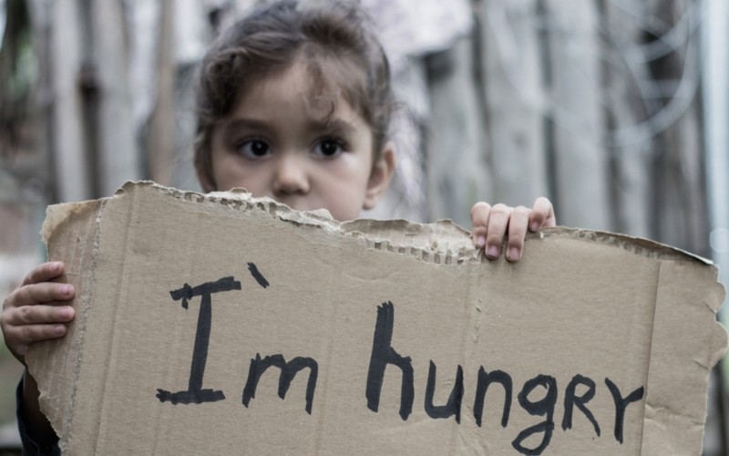
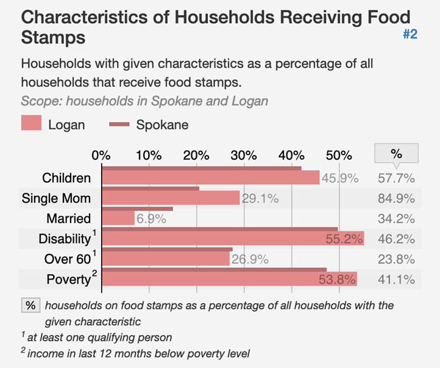

35.3% of residents in the Logan neighborhood are receiving food stamp benefits.
The USDA defines food insecurity as “consistent access to adequate food is limited by a lack of money and other resources at times during the year.”
The USDA's four tiers of food security:
To be considered food insecure a family must exhibit one of the following:
The residents of the Logan neighborhood in Spokane, Washington suffer from many compounding factors that make is difficult for them to have reliable food access. Most residents live over 0.5 miles from a supermarket and many residents cannot afford cars meaning they must walk to and from the store carrying their groceries. This can be dangerous especially in the winter and when residents are forced to go late at night. Moreover, the presence of only one supermarket within walking distance means prices are unfairly high, thus forcing financially strained residents to purchase less food.
Children are among the most impacted by malnourishment because of their developmental stage of life. According to the Feeding America organization, an estimated 13 million American children face food insecurity after the coronavirus pandemic.
Children who experience hunger are at a higher risk of:
Common causes of malnourishment among children are:
In the Washington State Healthy Youth Survey, under 20% of students not experiencing food insecurity reported having low grades, while 35% of students experiencing food insecurity reported having low grades.
45.66% of the Logan population age 18-64 live in poverty.
Food insecurity affects every age group in a population differently, but each age group’s experience with this issue affects their relationships with each other. Thus, there is more to the crisis of food insecurity amongst the Logan Neighborhood’s adult population than simply a lack of food—it involves their demographics, it becomes a vicious cycle, and it shapes their relationships with their families and children.
Common effects on parents are:
Roughly 7.3 million older adults are food insecure in the U.S.
Food insecure seniors don’t get necessary nutrients to keep them healthy. Seniors are more susceptible to illness when compared to younger adults, so they are at a greater risk of illness or death when malnourished. Moreover, the stress involved in being food insecure can increase the severity of illnesses derived from lack of nutrition.
Many organizations exist to help combat food insecurity that YOU can join!
One notable nationwide organization whose goal is to feed as many hungry families as possible is The Campus Kitchens Project. Campus Kitchens started in Washington, DC but has expanded to 63 universities nationwide. The project uses collegiate resources to prepare and deliver meals to their nearby communities. Gonzaga University operates a branch of Campus Kitchens and serves food to the nearby logan neighborhood.
Places Gonzaga’s Campus Kitchen serves food at: